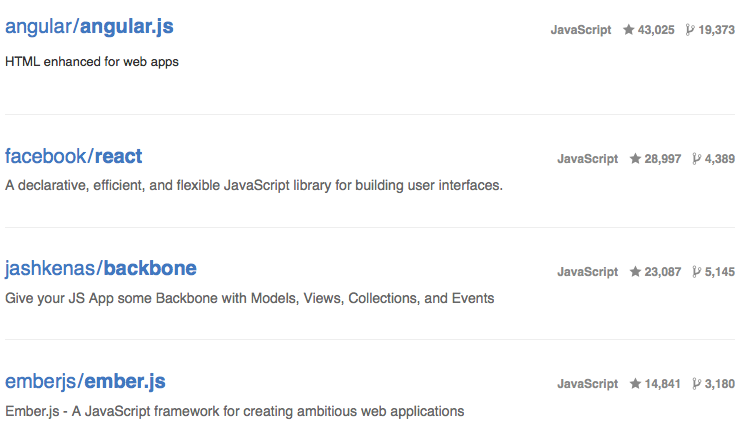
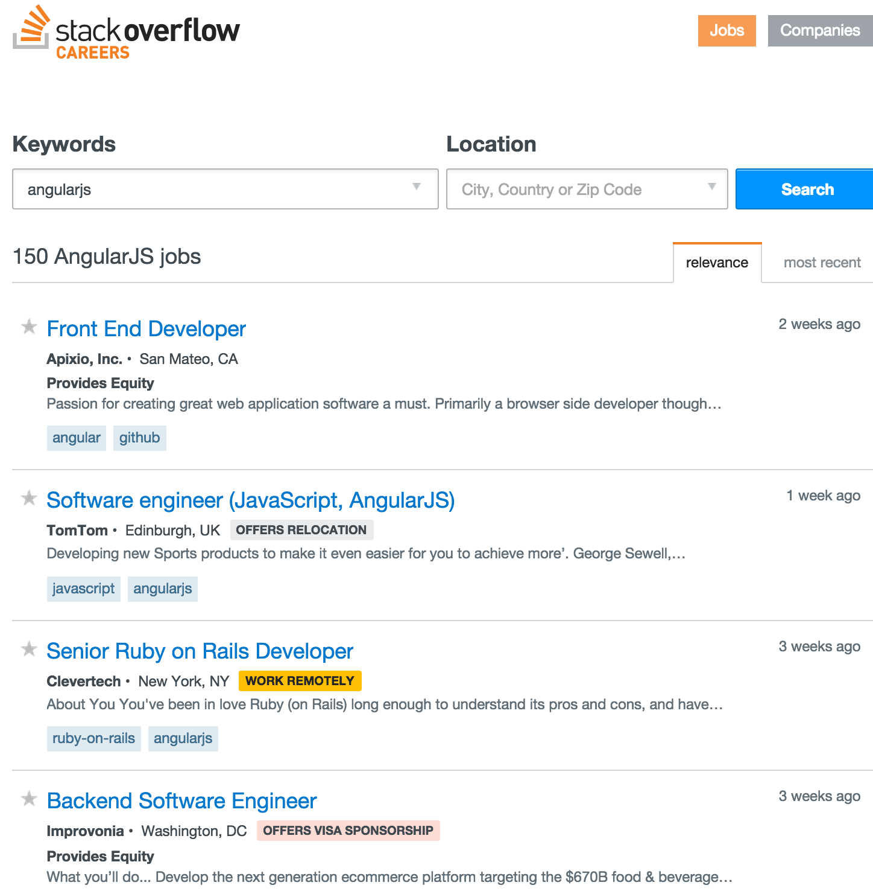
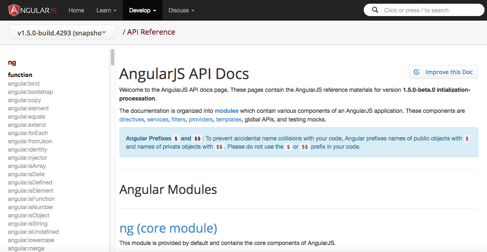
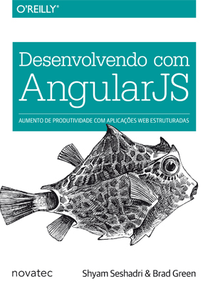
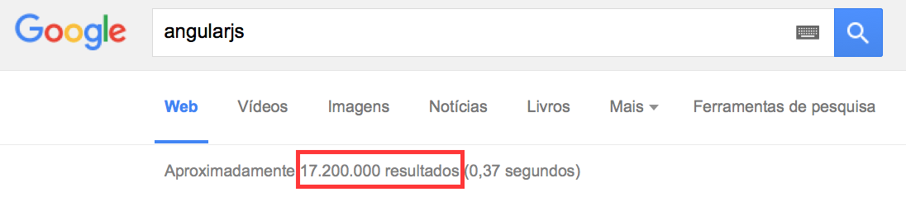

MEAN
Mongo, Express, Angular e Node
Aplicação JavaScript em todas camadas (fullstack)
Mongo
Banco NoSQL mais popular atualmente, proporciona escalabilidade e performance.
Express
Framework Node.js (backend) robusto e flexível para aplicações web.
AngularJS
Framework JavaScript (frontend) para aplicações web SPA (Single Page Applications).
NodeJS
Plataforma construída para aplicações de rede, velozes e facilmente escaláveis.
MongoDB
MongoDB é uma aplicação de código aberto, de alta performance, sem esquemas, orientado a documentos. Foi escrito na linguagem de programação C++. Além de orientado a documentos, é formado por um conjunto de documentos JSON.
Comandos Gerais
// Usado para acessar o banco de dados
use database_name
// Lista os bancos criados na instância
show dbs
// Lista as collections criadas no banco usado
show collections
// Atribui uma collection a uma variável para ser usada em consultas
coll = db.collection_name
find
// Objecto que define os critérios da consulta
var query = { field: { $gt: 10 } };
// Objeto que especifica os campos que serão retornados
var projection = { field: true };
// Executa o find
db.collection_name.find(query, projection)
// Executa usando atribuição por variável citado no slide anterior
coll.find(query, projection)
insert
// Insere um ou mais documentos em determinada collection
db.collection_name.insert({
"name": "Faculdade de Tecnologia e Ciencias do Norte do Paraná",
"address": {
"street": "R. Getúlio Vargas, 333",
"zipcode": "87709-000"
},
"coords": [ -23.083818, -52.469395 ]
});
update
// Atualiza um ou mais documentos em determinada collection
db.collection_name.update(
{
"coords": [ -23.083818, -52.469395 ]
},
{
$set: {
"name": "Fatecie"
}
}
);
save
// Atualiza ou insere um ou mais documentos em determinada collection
db.collection_name.save({
"name": "Fatecie",
"address": {
"street": "R. Getúlio Vargas, 333",
"zipcode": "87709-000"
},
"coords": [ -23.083818, -52.469395 ]
});
remove
// Remove um ou mais documentos em determinada collection
db.collection_name.remove({"coords": [ -23.083818, -52.469395 ]});
AngularJS
- Framework frontend usado para criar aplicações
- SPA (Single Page Applications)
- Estende o HTML para criação de aplicações/componentes dinâmicos com facilidade e produtividade
Características
-
Separação de responsabilidades
- Controllers
- Services
- Factories
- Directives
- Providers
- Estrutura MVC ou MVWhatever
- Injeção de dependências (Dependency Injection)
- Ligação de dados (Data Binding)
- Rotas
Modularização
A criação de módulos reutilizáveis ficou fácil.
Por consequência disso, atualmente com uma busca no NPM por angular retornam em 4.323 resultados e no bower 6.043.
Números impressionantes não?!?
Popularidade
Github showcases
Front-end JavaScript frameworks
- 13 repositórios
- 2 linguagens (JavaScript / HTML)
- 1º lugar
- 43.025 stars
- 19.373 forks
Em números
Github showcases
Em números
Em números
Mercado
Onde aprender?
AngularJS API Docs
Onde aprender?
Desenvolvendo com AngularJS
Precisa de mais?
Exemplos
Controller
angular.module('app.sample',[])
.controller('ControllerName',['$scope',function($scope){
// Código
}])
<div ng-controller="ControllerName"></div>
Exemplos
Service
angular.module('app.sample',[])
.service('ServiceName',['$http',function($http){
// Código
}])
Exemplos
Dependency Injection
angular.module('app.sample', [
'app.marketing',
'app.development'
])
Express
O Express é um framework web minimalista utilizada para fazer as rotas da sua aplicação e age como um middleware.
O que é um middleware?

Como é a estrutura de um middleware?
function timeMiddleware (req, res, next) {
console.log('Time:', Date.now());
next();
}
// Utilização do middleware para todas as chamadas
app.use(timeMiddleware());
- req: Requisição que está vindo do cliente, geralmente é uma conexão do navegador pedindo/mandando dados.
- res: Resposta que irá de volta para o cliente, podendo ser dados vindos do Banco ou de alguma rotina.
- next: Função que será executada para chamar o próximo middleware.
Modularização
Como cada middleware executam coisas diferentes e não tem conhecimento do próximo, isso permite a modularização.
Rotas
As rotas executam ações no servidor de acordo com uma URl e um método HTTP no qual o cliente(ou outro servidor) acessa.
Métodos HTTP suportados pelo express
- get
- post
- put
- delete
- head
- patch
E outros que vocês provavelmente nunca vão usar na vida:
options, trace, copy, lock, mkcol, move, purge, propfind, proppatch, unlock, report, mkactivity, checkout, merge, m-search, notify, subscribe, unsubscribe, search, and connect.Exemplo de rotas:
app
.get('/user',(req,res) => {
// Aqui pode-se chamar tanto o controlador para executar
// os métodos referentes a esta rota, ou acessar o DTO.
})
.post('/user',(req,res)=> {
// Aqui pode-se chamar tanto o controlador para executar
// os métodos referentes a esta rota, ou acessar o DTO.
})
NodeJS
NodeJS é desenvolvido para construir aplicações web de alta escalabilidade, capaz de manipular dezenas de comunicações simultâneas em um unico servidor.
Utiliza a interpretador de javascript Chrome v8
Principais caracteristicas
Orientada a Eventos: Responde a eventos que são emitidos em diversos momentos da execução.
Não bloqueante (assincrono): A execução não é interrompida para a execução de uma tarefa.
Gerenciador de dependência NPM
Gerenciador de dependência de modúlos javascript, que facilita o reuso, compartilhamento de código
e o controle de versão de bibliotecas que são utilizadas no projetos
Automatizadores de tarefa
Facitadores onde podem agrupar rotinas para pré-processamento de css, minificação de arquivos, vistorias de erros sintáticos,
inicialização de servidores entre outros.
Exemplos: Gulp e Grunt.
Principais bibliotecas
fs - Biblioteca utilizada para de manipular arquivos
http - Biblioteca que contem facilitadores para coneções com o protocolo HTTP 1.1
Mongoose - Middleware